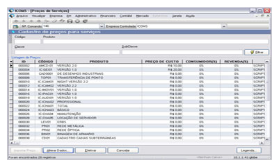

O GLOBE possui uma lista extensa de ferramentas para aliar usabilidade e conforto ao usuário, podem-se destacar algumas destas funcionalidades:
Múltiplas Empresas
Gerenciamento de múltiplas empresas na mesma base de dados, possibilitando facilmente a navegação entre as empresas cadastradas.
Por manter a segurança das informações de cada empresa, este recurso é muito útil, pois facilita a administração de empresas que pertençam ao mesmo grupo.
Scripts
Montado pela equipe de consultoria, os scripts (listas de comandos que podem ser executados sem interação do usuário) modelam o GLOBE de acordo com a regra de negócios de cada empresa.
O script é composto por uma linguagem de computador interpretada, ou seja, pode ser alterado independentemente de alterações feitas no código fonte do GLOBE. É uma tarefa realizada de maneira rápida, pois não é necessário uma nova compilação, alteração ou criação de scripts novos.
Precificação
O Brasil é um país que sofre constantes modificações tributárias, que influenciam diretamente o valor final dos serviços ou produtos comercializados pela empresa.
Para otimizar o tempo gasto efetuando modificações de regras de composição de preços, o GLOBE possui um script responsável pelo cálculo do valor final de cada produto ou serviço, chamado de Script de Precificação.

Relatório Dinâmico
O GLOBE possui dois tipos de relatórios: os relatórios de sistemas e os relatórios dinâmicos.
Os relatórios de sistema são relatórios padrões, ou seja, existentes para funcionalidades básicas, como: contas a pagar, clientes ativos, contas pagas por centro de custo, entre outras.
Os relatórios dinâmicos são relatórios criados pela equipe de consultoria, para atender às necessidades de cada empresa. Para isso o GLOBE possui um editor que permite a rápida criação e edição de relatórios.
Público e Privado
Para complementar o recurso de múltiplas empresas, o GLOBE permite que as empresas cadastradas na mesma base possam compartilhar algumas informações, como: clientes, fornecedores, serviços e produtos.
Todos os itens citados acima possuem um status, podendo variar entre público e privado, onde, se público, o dado será compartilhado entre todas as empresas, se privado a única empresa que terá acesso ao dado será a de origem do cadastro.
Estrutura de Organização do Globe
A organização interna do GLOBE é definida por três níveis estruturais: base, verticais, e verticais específicas.
A base é a união de todos os principais recursos comuns usados por qualquer empresa.
O próximo nível é chamado de verticais, que são ferramentas e recursos que trabalham e automatizam as regras de negócios de um determinado segmento empresarial.
É comum empresas do mesmo segmento possuírem regras de negócios diferentes, para isso, são criados conjuntos de regras específicos que atendem às necessidades de cada empresa. Estas regras compõem o terceiro nível da estrutura, a vertical específica.